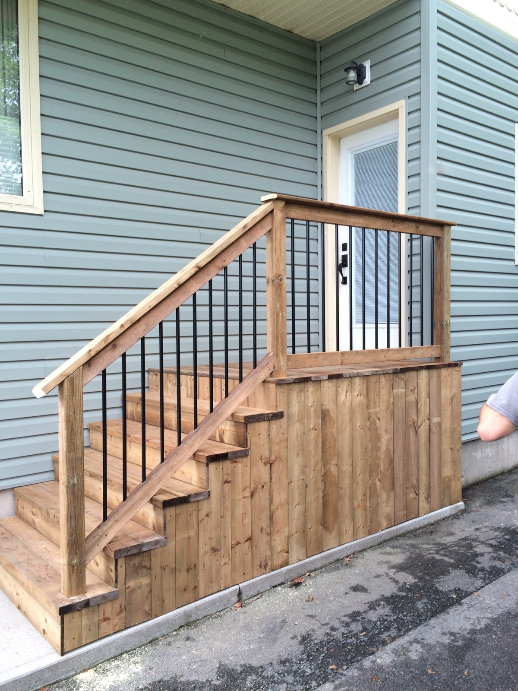
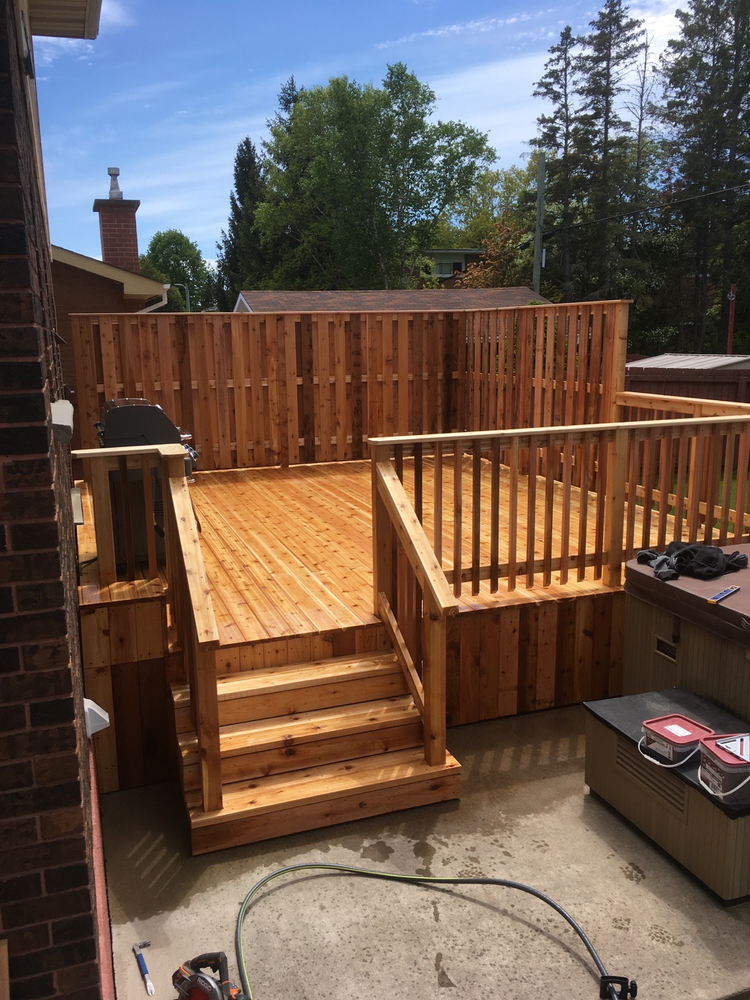
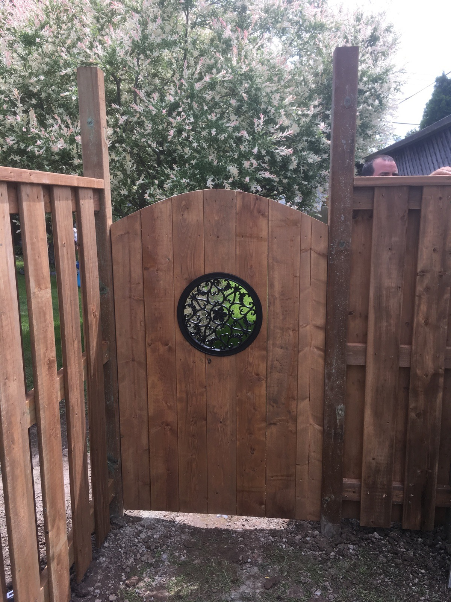
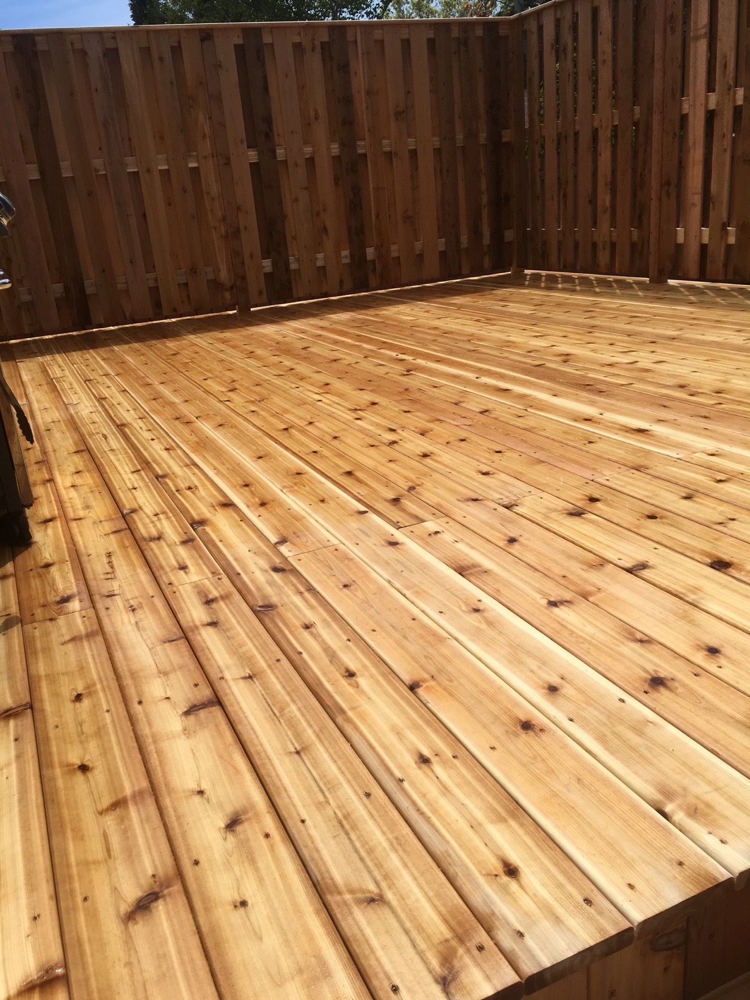
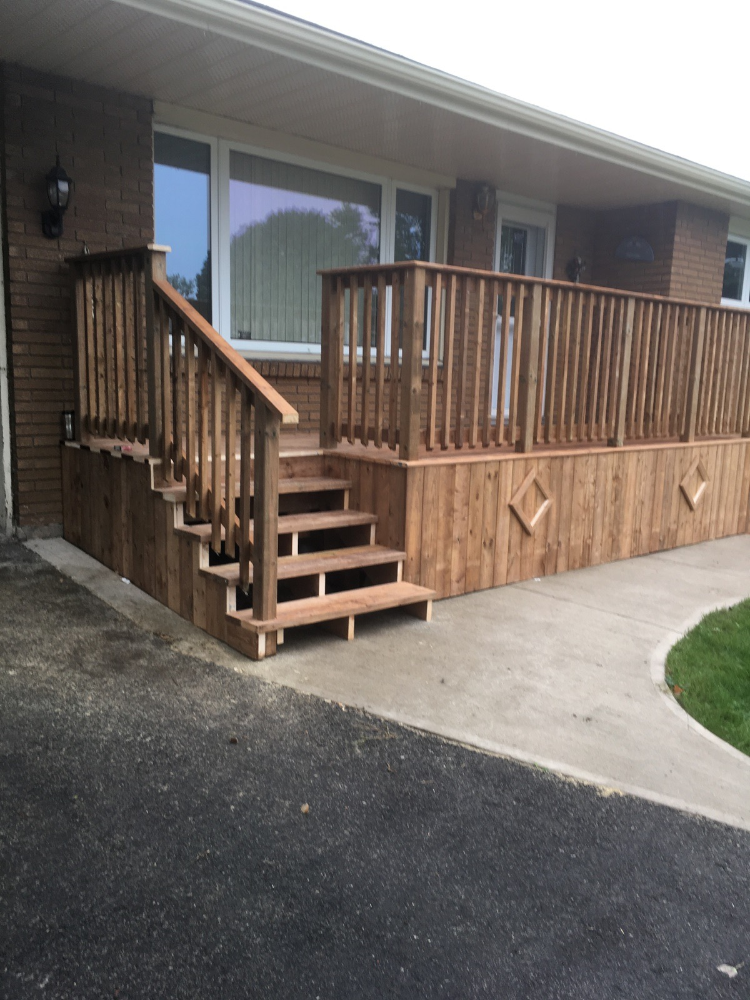

Decks & Outdoor Living
Durable decks, landings, steps, and exterior spaces built for everyday use.

Trusted locally for decades
Capco Construction is a family-owned contractor in Sault Ste. Marie serving the community since 1990. From decks, fences, and exterior structures to accessibility upgrades, repairs, and general contracting, Capco delivers dependable workmanship and straightforward service.
About Capco
Capco Construction has been serving Sault Ste. Marie since 1990. As a family-owned business, the company has built its reputation through consistent service, skilled craftsmanship, and a commitment to doing the work right.
From accessibility ramps and fences to decks, exterior builds, repairs, and custom contracting work, Capco helps homeowners and property owners improve how their spaces function and look.

Services
Capco handles focused repairs, full builds, and practical upgrades with the same steady attention to detail.

Durable decks, landings, steps, and exterior spaces built for everyday use.

Clean fence installations and property improvements that add privacy, structure, and curb appeal.

Safer access solutions for homes and businesses, including ramps, railings, and entry upgrades.

Gazebos, sunrooms, exterior carpentry, and custom structures planned around the property.
Practical repairs, replacements, and finishing work that keep spaces safe, useful, and looking sharp.

Reliable support for residential, exterior, and specialty projects from first conversation to final cleanup.
Why Capco
For more than three decades, Capco has helped Sault Ste. Marie property owners get straightforward answers and dependable finished work.
Longstanding local experience, built through repeat work, referrals, and practical problem solving.
Materials, details, and construction choices suited to real weather and everyday property use.
Direct conversations, realistic expectations, and a steady process from estimate to completion.
Workmanship that focuses on safety, durability, appearance, and how the space will actually function.
Portfolio